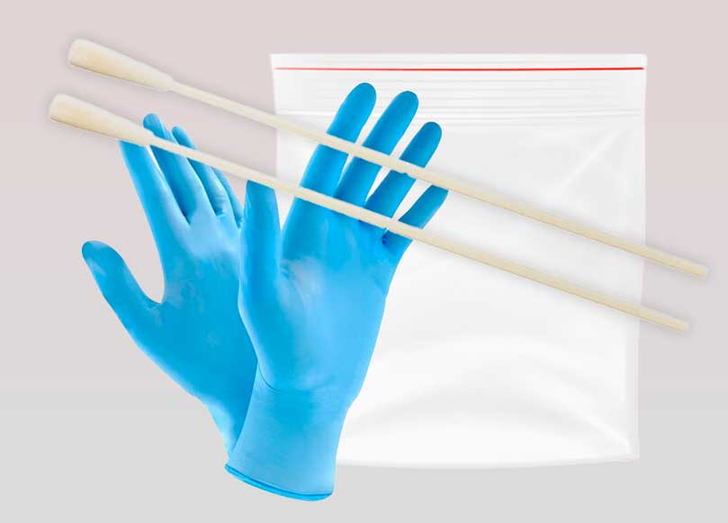

A citizen science initiative to isolate capitalism on a genetic level.
The dominant political narrative denies the possibility of any real alternative to capitalism. This resignation to the status quo relies in part on a mostly unspoken but nevertheless always-present assumption that our current political, cultural and economic realities are fundamentally unalterable because they are products of "human nature" itself. The logical conclusion of this viewpoint is that capitalism has, in some very real way, a physical basis in our bodies, that capitalism is itself hardcoded into our DNA.
The Capitalist Gene is an initiative to tackle this assumption head on by collecting genetic samples from noted capitalists and capitalistic ambients, in an unprecedented cooperative effort to isolate capitalism on a genetic level.

Participate
Everyone is welcome to participate in The Capitalist Gene. To do so, you will need to collect genetic samples from noted capitalists. A limited number of sample collection kits are available for order at no cost. You may also create your own sample collection kit.

Instructions
Follow the steps below to collect and submit a sample using a collection swab.
-
Locate a capitalist.
A capitalist is a person that profits by exploiting the labor of others. A capitalist is not a person who lives in a capitalist society. A capitalist is not someone who longs to be rich. A capitalist is not a person who likes going shopping. A capitalist is not a manager. A capitalist may or may not be a boss. A capitalist may or may not believe in capitalism. A person who is not a capitalist may say they are a capitalist. A capitalist is a person with a specific material relationship to workers. A capitalist is a person who owns capital. Capital is private property, which is another word for "means of production", like a factory or a data center. Capital is not personal property like a phone or a t-shirt. Where should you look for a capitalist and how will you know if you find one? Think of all the people in your life. What is their relationship with labor? Are any of them capitalists? Think of all the strangers you see in the street and hear about in the news. Are any of them capitalists? If you are unsure how to locate a capitalist consider using a private jet tracker, or looking through a list of billionaires. If you work at a company, ask to have a meeting with your company's owner, or a major shareholder. If you yourself are a capitalist, you can also voluntarily donate a genetic sample, if you meet the criteria.
- Wash or sanitize your hands, and put on personal protective equipment.
- Verify that the capitalist's mouth is empty.
- Carefully remove swab from package. Avoid touching swab tip with gloves or other surfaces.
- Hold the swab low on the handle, away from the tip.
- Have the capitalist open their mouth and immediately bring the swab tip to the inside of the cheek.
- Firmly rub and rotate the swab along the inside of the cheek for 5-10 seconds, ensuring that the entire swab tip has made contact with the cheek.
- Place swab directly into transport tube or collection envelope.
- Mail the sample to The Capitalist Gene at 1013 Willoughby Ave, Brooklyn, NY 11221.